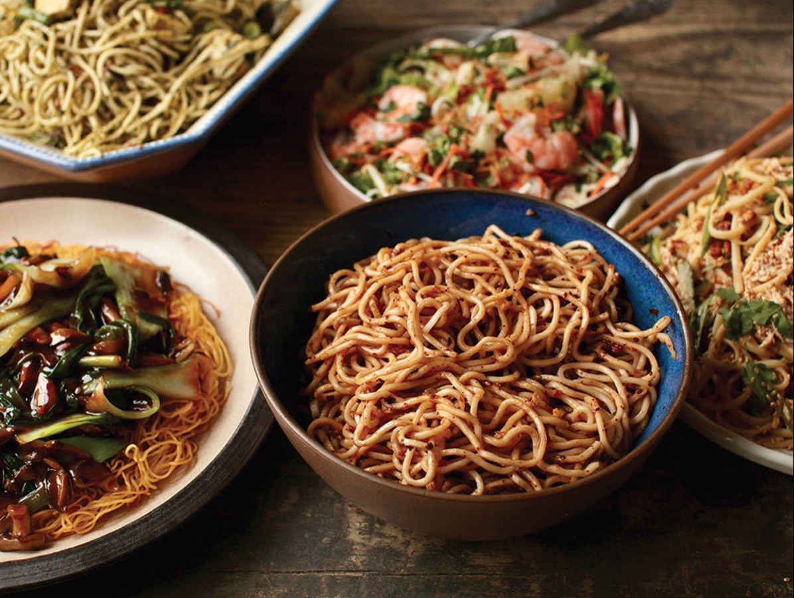

Know Your Noodles

My wife, Adri, and I started keeping track of all the different noodles we’ve eaten in Asia over the years. (OK, I keep track; she keeps busy trying to discover brand-new ways of telling me she’s sick of noodles.) We’ve had long, thin, noodles in broth in Beijing. We’ve had wide, flat hand-stretched noodles in chile oil in Wuhan. We’ve had flat steamed rice noodles in Saigon and stir-fried rice sticks in Bangkok. We’ve had bright yellow alkalized wheat noodles doused in chiles and mouth-numbing Sichuan peppercorns in Chengdu alongside noodles made by pouring a sweet potato starch batter through a potato ricer into a pot of simmering water. We’ve eaten stir-fried noodles with dark soy sauce for breakfast in Indonesia and vermicelli in spicy coconut broth for lunch in Malaysia.
We’ve had steamed bean starch noodles with cucumbers and cilantro in Xi’an and noodles tossed with ground pork and preserved mustard root in Chongqing. We’ve eaten buckwheat noodles on a snowy mountainside in Nagano and stir-fried yakisoba in Kyoto. We’ve eaten pale white wheat noodles doused with sesame paste and chile oil in Shanghai,* fried egg noodles in curry broth in Chiang Mai, and crispy panfried noodles in Singapore. We saw noodles that were pulled, peeled, extruded, twisted, kneaded, cut, sliced, steamed, rolled, tossed, flicked, and lovingly caressed before being firmly slapped down onto a steel table. Noodles for breakfast, noodles for lunch, noodles for dinner, noodles for elevensies, noodles for a midnight snack, noodles for a pre-midnight-snack snack. You’d have to be a true wet noodle to ever get bored of noodles (though I don’t blame Adri).
Does all of this variety make you a little uncomfortable? Don’t worry; me too. Despite having grown up in a Japanese household where noodles were a staple, I still get a little nervous when I head into the Asian supermarket to pick up some fresh noodles for dinner, knowing that I’m going to have to pick from dozens of different packages that all look sort of similar, marked in unfamiliar languages.
Well, here’s the good news. Once you learn a few of the basics and get a general grasp of what you’re looking at, you’ll find that a lot of the choices really boil down to nothing more than brand loyalty. And just like your spaghetti carbonara is gonna work even if the supermarket was out of DeCecco and you had to pick up a box of Barilla, the odds of ruining your dinner (or midnight snack!) because you picked up some noodles that were not exactly right are pretty low.
Still, you can improve these odds by understanding the basic categories of noodles you’ll find and what specific dishes and situations they’re best used for. Rather than bother with the impossible task of being comprehensive, I’m just going to do my darnedest to be useful. In this guide you’ll find a few common noodle-related terms that can help with identification, followed by a thorough guide to the Asian noodles you’re most likely to come across in the United States and the noodles that I find most useful for home cooks.
And if you don’t have access to Asian noodles at all, well don’t worry—when cooked right, even Italian pasta can be delicious in many Asian noodle dishes (see “Turn Spaghetti into Ramen,” here).
NOODLE TERMS
Before we get to specific types of noodles, here are a few basic noodle terms to be aware of when looking at packaging or recipes. In most recipes, unless you want to be a real stickler, any noodles within a broad category will work. Any type of wheat noodle (mein, mien, or miàn) can be substituted for another. Recipes that call for vermicelli-style noodles will work with any vermicelli, whether rice, mung bean, or sweet potato based.
Miàn, mien, or mein
The Chinese term for wheat noodles (think: lo mein or chow mein) or mien. Many Japanese noodles share this etymological root, ramen and somen, for instance.
Fěn or fun
Chinese noodles made from nonwheat starches, such as hor fun (the wide steamed rice noodles that Beef Chow Fun, here, is made from) or mi fun (thin dried rice noodles used in soups and stir-fries throughout Asia).
Chow
Chow is a stir-fry. The Chinese symbol for chow, 炒, is composed of 火 (“fire”) and 少 (“little” or “less”), indicating a quick cooking method. Combine it with miàn or fěn and you’ve got chow mein and chow fun, a couple of classic noodle stir-fries. (This is also where we get the American English term “chow,” as in, “chow down.”)
Hand-pulled
Lā translates from Mandarin as “to pull.” Hand-pulled noodles (lāmiàn) are made from wheat flour doughs that are stretched by hand to form noodles. The thinness of the noodle depends on how long the dough is stretched. Master noodle-makers can start with a solid block of dough and transform it into a single noodle hundreds of meters long with the width of a strand of angel hair pasta as they repeatedly lift, twist, fold, and stretch the dough. Some hand-pulled noodles, on the other hand, are wide and stubby with a heartier texture. Think pappardelle vs. capellini.
Alkaline noodles
Some Asian noodles, most notably ramen and some types of Chinese noodles, are made with water that has alkalizing minerals added to it. This liquid, known as kansui in Japanese, gives ramen noodles their characteristic yellow color, extra-springy and slippery texture, and a flavor that is a bit hard to describe. I find alkaline noodles to be a little sulphurous, a touch soapy, and definitely eggy (all in a good way).
Vermicelli
Any extra-thin noodle. Commonly made from rice, but you’ll also frequently find mung bean or sweet potato starch vermicelli.
HOW TO IDENTIFY NOODLES IN THE WILD
Italians may be known for their pasta, but for sheer variety of fresh and dried noodles, Asia’s got them beat by a landslide.* To be fair, they’ve had a head start. While pasta as we know it was developed in Italy sometime around the twelfth or thirteenth century (most likely well before Marco Polo’s famous trip to Asia), noodles have been consumed in China for several millennia. In 2005, a team of archaeologists led by Dr. Houyuan Lu of the Institute of Geology and Geophysics at Beijing’s Chinese Academy of Sciences identified the husks of millet used to produce noodle dough in a 4,000-year-old sealed earthenware container in Lajia, a Neolithic site in northwestern China. Noodles made from millet dough, which lacks the gluten-forming proteins found in wheat flour, would not have had the same elasticity and bite we expect in wheat-based Asian noodles today, but may have borne some resemblance to buckwheat soba or other nonwheat noodles.†
By the middle of the third century, during the Han Dynasty, noodles were already a staple part of the Han Chinese. By the end of the first millennium, wheat production was widespread in China and toothsome, elastic wheat noodles had become the norm. As noodles made their way across China and the rest of Asia, they’ve taken on countless forms and have been produced from a wide range of grains and vegetables. Today the range of diversity you’ll find in China alone is truly staggering. Expand that to the rest of Asia and it becomes a mind-breakingly huge variety.
Attempting to write a fully comprehensive guide would take up an encyclopedia-sized volume, so I am not going to. Instead, I’ll focus on the most common types of noodles you are likely to find at the supermarket, as well as a couple of the less common noodles that I happen to love.
Wheat Noodles
Lāmiàn
Appearance: Long and thin with an off-white to yellow color
Country of Origin: China
Main Ingredient: Wheat
Formation Method: Hand-stretched and sold fresh or dried
Uses: The best all-purpose noodles for stir-fries and noodle soups. If I had to pick one noodle to take to my desert island, these would be it. These are ideal as the base for fiery Dan Dan Noodles (here) or Zhajiang Miàn (here), served with Thai Basil and Peanut Pesto (here), and in Shanghai-Style Sesame Noodles (here).
Cooking and Storage: Fresh lāmiàn needs to be cooked in boiling water before it is used. Because Chinese noodles are typically salted before forming, you don’t need to use salted water as you would for Italian pasta. Plain old boiling water is fine. Add the noodles to boiling water and cook al dente, then transfer immediately to hot soup or drain and dry well for a stir-fry or to serve cold.
Similar Alternatives: Fresh ramen or Italian spaghetti (or capellini) cooked in alkaline water (see “Turn Spaghetti into Ramen,” here).
Lo Mein
Appearance: Long and thin with a deep yellow color. Typically a little thicker than lāmiàn
Country of Origin: China
Main Ingredients: Wheat and eggs
Formation Method: Hand-stretched or rolled and cut
Uses: Lo mein is actually the name of a preparation, not just the noodles themselves, but you’ll often see noodles labeled “lo mein” or “for lo mein” in the United States. In Chinese cuisine, lo mein range from as thin as wonton noodles to slightly thicker and are typically served either stirred together with a sauce or braise or as a form of deconstructed wonton noodle soup: noodles, boiled wontons, and greens, with soup on the side. In the United States, lo mein noodles are thicker egg noodles and are almost always stir-fried in a soy-based sauce with vegetables and meat or seafood. These thicker noodles are what you want for my Chinese American Stir-Fried Lo Mein with Shiitake, Chives, and Charred Cabbage (here).
Cooking and Storage: Add the noodles to boiling water and cook al dente, then transfer immediately to hot soup or drain and dry well for a stir-fry or to serve cold.
Similar Alternatives: Fresh lāmiàn can be par-cooked in boiling water, drained, and stir-fried like lo mein, as can spaghetti cooked in alkaline water (see “Turn Spaghetti into Ramen with This One Easy Trick,” here). Cumian are thick, rectangular noodles commonly used in Shanghai-style noodle dishes.
Chow Mein
Appearance: Long and thin with a deep yellow color, thinner than lo mein.
Country of Origin: China
Other Names: Hong Kong noodles or “panfried noodles”
Main Ingredients: Wheat and eggs
Formation Method: Hand-stretched or rolled and cut.
Uses: As with lo mein, chow mein is technically the name of the preparation, though you’ll find fresh noodles labeled “chow mein” at the Asian market. Chow mein are typically served panfried.
Cooking and Storage: Fresh chow mein should be boiled before stir-frying. Frequently, chow mein will be sold par-cooked and ready to fry, in which case they only need to be loosened up before stir-frying with a sauce to soften them up slightly, or panfried plain in oil to crisp into a sort of cake before being topped with saucy ingredients or finished with a sauce in the wok.
Similar Alternatives: Wonton noodles are essentially raw chow mein noodles and can be boiled, drained, and used in the same manner for panfrying or stir-frying.
Wonton Noodles
Country of Origin: China
Other Names: Wantan mee (Malaysia), bami kiao (Thailand)
Main Ingredients: Wheat and eggs
Formation Method: Rolled and cut or machine-formed with rollers and dies
Classic Uses: You’ll find these thin, springy noodles in Chinese-style wonton soups (add them to The Best Wonton Soup, here) or served lightly blanched topped with aromatic oil and other seasonings. They’re also commonly used throughout Southeast Asia for soups and dry noodle dishes, such as bami mu daeng (Thai noodles with roast pork) and mami (Philippine noodle soup).
Similar Alternatives: In most cases you can use thin lāmiàn or ramen in place of wonton noodles, though they don’t have quite the same eggy flavor or firm texture.
Biangbiang Miàn
Country of Origin: China
Other Names: Youpo chemian, hand-torn noodles
Main Ingredient: Wheat
Formation Method: Made by hand-stretching rectangles of dough into wide strips, then tearing them in half lengthwise. During the stretching process, the noodle-maker will whip the dough up and down, letting it whap against an oiled tabletop repeatedly as the noodles stretch out to arm’s length.
Classic Uses: Biangbiang miàn are boiled and served in soups and savory salads.
Similar Alternatives: Dried Italian pappardelle or other very wide pasta cooked in alkaline water (see “Turn Spaghetti into Ramen with This One Easy Trick,” here).
Liangpi
Country of Origin: China
Other name: Cold skin noodle
Main Ingredient: Wheat starch
Formation Method: Liangpi are made by rinsing a wheat dough in water to release its starch. The dough is then discarded and the starchy water is allowed to rest overnight, during which time the wheat starch settles to the bottom of the container. The clear water on top is poured off, then the starch slurry at the bottom is poured into flat sheets, steamed, and cut.
Classic Uses: Liangpi are most frequently served cold, dressed with chile oil, garlic, and a variety of other condiments and garnishes, such as sesame paste, vinegar, cucumber, mung bean sprouts, and cilantro.
Ramen (Fresh)
Country of Origin: Japan, by way of China (in Japan ramen is still thought of as a Chinese noodle dish, despite having its own unique identity)
Main Ingredient: Wheat flour
Formation Method: Ramen is made from alkalized dough. The noodles can be formed via hand-stretching, rolling, or extruding.
Classic Uses: Ramen noodles are most frequently consumed in the form of ramen soup, but they are also used for Hiyashi Chūka (cold ramen noodle salad, here) and for tsukemen (broth-free ramen noodles served with a dipping sauce on the side). Ramen are also stir-fried along with a Worcestershire-style sauce to make Yakisoba (here), a popular Japanese street food or bar food (which is made with ramen despite having the word soba in the name).
Similar Alternatives: Lāmiàn or Italian spaghetti or capellini cooked in alkaline water (see “Turn Spaghetti into Ramen with This One Easy Trick,” here).
Ramen (Dried)
Country of Origin: Japan
Other Name: Instant noodles
Main Ingredients: Wheat flour and fat
Formation Method: Par-cooked ramen noodles are dehydrated and sold in ready-to-cook blocks with a long shelf life. Cheaper brands deep-fry the noodles to remove excess moisture, resulting in slightly faster cooking but an inferior texture. Better brands (my favorite is Myojo Chukazanmai, available online and at most Japanese supermarkets) naturally air-dry the noodles, leading to springier, more natural texture when cooked.
Classic Uses: Late night snack. College food. Drunk food. When properly customized, a bowl of instant ramen can form an extremely satisfactory (if not healthy) meal.
Similar Alternatives: None
Somen
Country of Origin: Japan
Main Ingredient: Wheat
Formation Method: Stretched or rolled and cut. Somen are thin, thin, thin. Thinner than Italian angel hair. Because of this, even in dried form they cook up in record time and are wonderful for mopping up delicate sauces.
Classic Uses: Frequently somen are served chilled on ice and dipped into cold soy-dashi broth as a summer snack. You’ll find restaurants that serve cooked noodles that flow down an endless waterfall, allowing you to fish them out with your chopsticks and dip as you eat. Somen can also be served hot in delicate broths.
Similar Alternative: Very thin angel hair pasta
Udon
Country of Origin: Japan
Main Ingredient: Wheat
Formation Method: Usually rolled and cut, sometimes stretched. There is a wide variety of udon noodles in Japan, but most of them are wide, flat, and maintain a nice bouncy chew after cooking. They are sold dried or frequently fresh-frozen.
Classic Uses: Udon are most frequently served hot or cold in simple dashi and soy-based broths or curry broth.
Similar Alternatives: Dried linguine or fettuccine cooked using the baking soda method (see “Turn Spaghetti into Ramen,” here)
Soba
Country of Origin: Japan
Main Ingredients: Buckwheat or a mixture of buckwheat and regular wheat
Formation Method: Rolled and cut
Classic Uses: Soba is frequently served hot in a dashi-based broth or cold with a dashi-based condiment for dipping and slurping. Because buckwheat does not form gluten as easily as refined wheat flour, soba noodles have a more delicate texture and are known as a difficult style of noodle to master.
Similar Alternatives: None
Rice Noodles
Hor Fun
Country of Origin: China
Other Names: Shahe fěn, chow fun (chow means “fried,” but in the West hor fun noodles will often be labeled “chow fun,” as stir-frying is the most common way they are prepared); kway teow (Malaysia, Singapore), sen yai (Thailand), pho (Vietnam)
Main Ingredient: Rice
Formation Method: A rice starch slurry is poured onto a flat, wide surface, steamed, then cut.
Classic Uses: Wide, fresh hor fun are stir-fried with soy sauce for Beef Chow Fun (here), Pad See Ew (here), or char kway teow or served in brothy or saucy preparations. Narrower rice noodles are used for noodle soups throughout Southeast Asia. Pho noodles are similar to hor fun in preparation, but typically much more delicate.
Similar Alternatives: None
Rice Stick
Country of Origin: China
Other Names: Banh pho (Vietnam), pad Thai noodle, jantaboon or chantaboon (Thailand), or wide rice noodle
Main Ingredient: Rice
Formation Method: Same as for hor fun, but typically thinner and more delicate. Rice sticks are typically sold dried, while hor fun is sold fresh.
Classic Uses: Noodle soups such as pho or Thai boat noodles, in Vietnamese spring rolls and salads, stir-fried. Because rice noodles are so delicate, they are very easy to overcook in soups and are easy to break in stir-fries, so extra care must be taken when preparing them.
Similar Alternatives: Bean thread noodles can be used in place of thin rice sticks (vermicelli). Wheat-based noodles can be used in place of thicker rice sticks for soups and stir-fries.
Rice Cakes
Country of Origin: China
Other Names: Tteok or dduk (Korea), Shanghai-style nian gao (China), mochi (Japan)
Main Ingredient: Glutinous rice
Formation Method: Traditionally, glutinous rice is pounded into a sticky dough that is then shaped and steamed. Modern rice cakes are made by machine and extruded. Korean dduk is usually shaped into short cylinders, while Shanghai-style nian gao is shaped into bias-cut disks. In Japan, mochi is formed into square cakes or small balls called dango.
Classic Uses: There is a huge variety of rice cakes in Korea, China, and other Asian countries, which range from soft and sticky to firm and chewy. They are used in both savory and sweet applications and can be grilled, simmered, steamed, baked, or stir-fried. They are the main ingredient in Spicy Korean Rice Cake Stew (Gungmul Tteokbokki) with Kimchi (here) and in several other Korean and Chinese soups and stir-fries. In Japan, a softer form of rice cake called mochi is grilled, simmered, or baked (in modern times it is also formed around ice cream as a dessert). Rice cakes are a traditional food for New Year’s Day in Korea, China, and Japan.
Similar Alternatives: None.
Other Starch Noodles
Shirataki
Country of Origin: Japan
Main Ingredient: Konnyaku (yam starch)
Other Names: Ito konnyaku or Devil’s tongue noodle
Formation Method: Shirataki noodles are made by extruding a yam starch (glucomannan) mixture into boiling water or by setting the yam starch mixture into solid sheets and cutting by hand or machine. They are typically sold in sealed packages containing starchy water. They should be rinsed in clean water before use.
Classic Uses: Shirataki are excellent served cold with simple dressings. They can also be panfried or roasted and served in soup.
Similar Alternatives: None
Bean Thread Noodles
Country of Origin: China
Other Names: Fensi (China), cellophane noodles, glass noodles, dangmyeon (Korea)
Main Ingredient: Mung bean, sweet potato, potato, or tapioca starch
Formation Method: They are made by extruding a starchy slurry into boiling water.
Classic Uses: Bean thread noodles have a huge number of uses. They can be stir-fried (see my recipe for Ants Climbing Trees, here), used in soups or hot pots, used to fill dumplings, or used in warm or cold noodle salads.
Similar Alternatives: Thin rice sticks (vermicelli)
*I’ll be honest: only I ate that one; my wife had disappeared to one of the rare noodle-free corners of the city by that point, probably looking for xiao long bao—Shanghai-style soup dumplings—which are another story for another time.
†OK, having a hugely diverse population and land mass approximately 150 times greater and a population 71 times greater probably helps a bit with that diversity.
‡Buckwheat, despite its name, is not in fact related to wheat and contains no gluten-forming proteins.